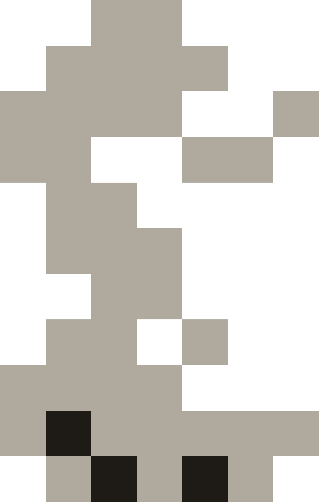

Chi decide cosa va bene?
Bello non significa giusto
Un generatore di interfacce azzera i tempi della prima schermata, ma produce risposte plausibili a problemi non ancora chiariti. Un’interfaccia può rispondere ai clic e tuttavia rimanere concettualmente sbagliata.

Senza frizione non c’è apprendimento
La vera competenza nasce dal tempo speso su una schermata, provando e scartando soluzioni tra gli ostacoli dello strumento. Saltare questo processo con l’AI priva il designer del luogo in cui si forma il pensiero critico.
La trappola del no-responsabilità
La conoscenza del design non serve più solo a produrre, ma a giudicare. Per potersi assumere la responsabilità di un progetto, il designer deve saper dire di no alle proposte automatiche della macchina.
Il giudizio è l’unico valore
L’esperienza rimane l’unico strumento capace di riconoscere cosa manca in una schermata apparentemente perfetta.